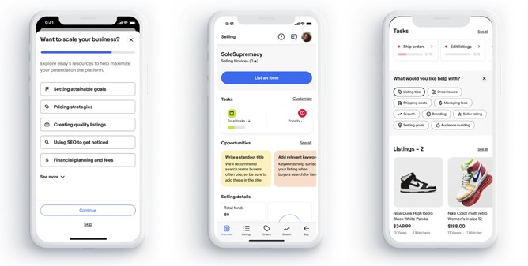
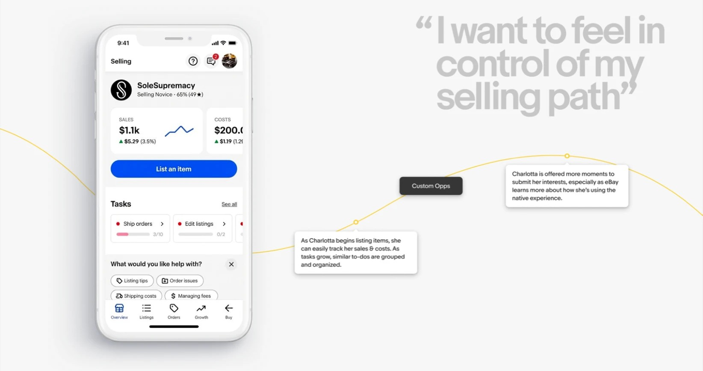

eBay
Director of Product Design, Seller Experience. I owned the seller experience end to end, web and mobile, across consumer, small business, and enterprise sellers on a marketplace running roughly $73 billion in annual GMV with 132 million active buyers. Relative to the buyer side, selling had been neglected for years, which meant the opportunity was large and the organizational habits were set.
2022 to 2024
eBay's first generative AI feature
Most listings on eBay had no description, and when buyers compared two similar items they almost always chose the one with a description. My team designed and shipped the Magical Listing Tool, which drafts title, description, and item specifics for sellers, end to end with eBay's AI team from concept to launch in September 2023. It was the first of a set of tools aimed at removing the effort from listing: start from a photo, or a video with voice-over, and let the system do the rest.
30%of daily US app sellers tried it in the first weeks 95%+of those kept the AI draft, with or without edits 80%+CSAT

The mobile seller sprint
Small-business sellers were running their businesses on phones, and eBay's mobile selling features trailed competitors by a wide margin. SMBs were 6 percent of sellers and 42 percent of revenue. I ran one of three Lighthouse design sprints on this: cross-disciplinary teams from Product, Marketing, and Engineering through a structured discovery track, three personas plotted against their emotional and functional journeys, overlaid to find the shared territories, then concepts for each territory that graduate a seller from novice to pro. The vision was one flexible system rather than a fixed feature set, because a seller's needs change as the business grows. The concepts themselves stay internal; the method is the point.
The other change that mattered: I got Product to commit design into their six-month planning cycle, so the team shaped roadmaps before they were set instead of receiving them finished.